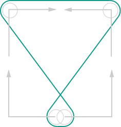
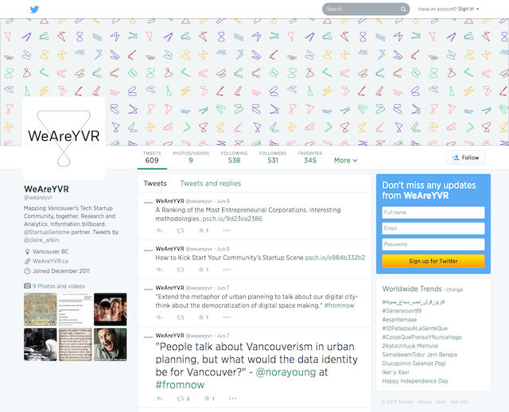

The WeAreYVR brand is designed to represent both the WeAreYVR project to bring understanding and insight through data to Vancouver’s startup community. As it refers to and is informed by that community, the brand must also stand for its constituents without imposing a certain tone of voice or aesthetic.
The research informing the brand design is available at denimandsteel.com/weareyvr
The brand is attentive as it listens and responds to community needs;
authoritative as it is driven by data;
collegial as it helps people in the community find each other and celebrates our camaraderie;
purposeful as it promotes Vancouver as a unique and productive startup ecosystem;
transparent with its roots in open-source;
and welcoming as it welcomes diversity and interest both locally and globally. The brand is honest about what is positive or negative at any given moment, but is always aspirational and optimistic.
Opening channels for Vancouver’s startup community
The tagline balances against the name by:
The logo is based on an inverted hourglass shape, which is transformed using different values that are either set or randomly generated. As the values increase, the points that underpin each corner of the shape travel around the outside of the bounding box, generating unique but constrained shapes.
Use the logo generator to tweak the positions of the values, choose colours and size, and generate logos from arbitrary text:
Logo GeneratorThe pattern generator can be used to make background patterns that might be used for the back of business cards, banners, or even t-shirts.
Pattern GeneratorThe unique nature of the logo will let it reside easily in many different places, here are a few examples.
On the desktop we can use a tiling wallpaper:
On the phone, a wallpaper can be generated for personal use with text and without:
On Twitter, using the primary brand colour #10988b for the "Theme colour" with an avatar and header image:

Or on a tshirt:
Simply include d3.js and weareyvr-mark.js into the page and any elements classed weareyvr-mark will be converted into a logo, for example:
<div class="weareyvr-mark"></div>Which generates a mark with the core brand colours:
Extending the mark is done with data- attributes and any of the following can be used:
100.black, white, or none. Defaults to black.wr-pink or wr-colour-event. Defaults to wr-spruce.Altogether, this might look like:
<div class="weareyvr-mark" data-height="72" data-text="black" data-colour="wr-pink" data-radius="20" data-one="0" data-two="25" data-three="50" data-four="100"></div>Which will generate the following mark:
A number of sample implementations and extras have been created to illustrate the use of the brand elements:
The logo is expected to live digitally and use information from the page it's presented with. One way to do this is to take data from a company or individual and use it to influence the shape of the glyph. For example, the logo generator uses a hashing algorithm to convert text to decimal numbers of 0–100. Another example is to take the number of employees, amount of investment, months since founding, and other aspect to generate a unique stamp for a given company. These kinds of touches tell a good story and ensure that the logo is representative of its community members in novel and unique ways.
The logo has two parts: an algorithmically-generated doodle, and an unchanging wordmark. Where the doodle stands for the frequent changes that characterize startups, the wordmark is stable and hand-picked to stand for the community’s proud spirit and unity.
The doodle can be used alone as a design motif, and works well in groups by gesturing to the many shapes and sizes of startups that, while different, have an underlying unity. When used as a logo, the doodle and wordmark must both be present.
The logo’s doodle is adjusted by live data from the WeAreYVR site. It speaks to how data informs what we do, and reflects the changing, active nature of the startup community.
WeAreYVR is here to serve startups, not upstage them. We have an identity, but we step aside to let startup brands shine.
Startups come in many shapes and sizes, and they change quickly. Our logo changes to show that no matter how different, all the startups here are part of our community.
The doodle is mathematically generated, so there’s an order to all the shapes. Most importantly, the WeAreYVR wordmark doesn’t change so we have both consistent and dynamic elements in one logo. This combination gives the logo the ability to be both unique and recognizable, and over time those changes become part of what makes it recognizable.
Fort is flexible yet durable to evolve with WeAreYVR. It works great at many sizes and presents text and numerical data well, and its square shoulders and rounded counterforms speak to Vancouver’s industrial roots and contemporary style.
“It’s not like I’m using,” Case heard someone say, as he shouldered his way through the crowd around the door of the Chat. “It’s like my body’s developed this massive drug deficiency.” It was a Sprawl voice and a Sprawl joke. The Chatsubo was a bar for professional expatriates; you could drink there for a week and never hear two words in Japanese.
Ratz was tending bar, his prosthetic arm jerking monotonously as he filled a tray of glasses with draft Kirin. He saw Case and smiled, his teeth a webwork of East European steel and brown decay. Case found a place at the bar, between the unlikely tan on one of Lonny Zone’s whores and the crisp naval uniform of a tall African whose cheekbones were ridged with precise rows of tribal scars. “Wage was in here early, with two joeboys,” Ratz said, shoving a draft across the bar with his good hand. “Maybe some business with you, Case?”
Arnhem, originally designed for newspaper and editorial use, is a typeface that’s calm and cool, but not without a personality. It’s authoritative and informative.
Use Arnhem for large blocks of text (reports, blog posts, guides…).
to the dire and ever-circling wolves of disrupted circadian rhythm. It is that flat and spectral non-hour, awash in limbic tides, brainstem stirring fitfully, flashing inappropriate reptilian demands for sex, food, sedation, all of the above, and none really an option now.
Not even food, as Damien’s new kitchen is as devoid of edible content as its designers’ display windows in Camden High Street. Very handsome, the upper cabinets faced in canary-yellow laminate, the lower with lacquered, unstained apple-ply. Very clean and almost entirely empty, save for a carton containing two dry pucks of Weetabix and some loose packets of herbal tea. Nothing at all in the German fridge, so new that its interior smells only of cold and long-chain monomers.
We call the primary brand colour “Spruce”. It evokes Vancouver’s blue-green colour motif—the colour of the mountain forests reflected off the water—without being so bright or saturated that it distracts from our content.
For performance reasons, all icons require the base class .wr-icon and an individual icon class. To use, include wr_icons.css and place the following code just about anywhere. Don’t use icon classes and other classes on the same element; instead, apply icon classes to an empty <span>. Be sure to leave a space between the icon and text for proper padding.
<span class="wr-icon wr-icon-startup"></span>The icons are designed on a 16×16px grid, so they look best at 16×16px or 32×32px. Icon sizes are automatically adjusted for various where necessary, but you can use the classes below to set the icon size manually, or use the Less mixin .wr-icon-size(@size) within a style declaration for .wr-icon to set a custom size.
| Icon | Class | Size |
|---|---|---|
.wr-icon-sm |
16×16px | |
.wr-icon-md |
24×24px | |
.wr-icon-lg |
32×32px | |
.wr-icon-xl |
48×48px |
.ridiculous-size {
.wr-icon {
.wr-icon-size(128px); // 128×128px
}
}Each colour is available via two Less variables: a default variable of @wr- followed by the colour name, and a semantic variable of @wr-colour- followed by the colour’s semantic role. Use the semantic variable when using the colour for a semantic purpose; otherwise, use the devault variable.
@brand-primary variable. If you must reference this specific colour, use @wr-spruce.
@wr-red, @wr-colour-advisor
@wr-pink, @wr-colour-event
@wr-orange, @wr-colour-founder
@wr-green, @wr-colour-startup
@wr-blue, @wr-colour-employee
@wr-purple, @wr-colour-investor
@wr-brown, @wr-colour-jobs
For added readability when applying brand colours to text, append -txt to any of the Less colour variables listed above.
@brand-primary, @wr-spruce-txt
@wr-red-txt, @wr-colour-advisor-txt
@wr-pink-txt, @wr-colour-event-txt
@wr-orange-txt, @wr-colour-founder-txt
@wr-green-txt, @wr-colour-startup-txt
@wr-blue-txt, @wr-colour-employee-txt
@wr-purple-txt, @wr-colour-investor-txt
@wr-brown-txt, @wr-colour-jobs-txt
Add one of the following classes to an <a> tag to apply a brand colour to the link.
| Link | Semantic class | Colour class |
|---|---|---|
.wr-link-advisor,.wr-link-guide
|
.wr-link-red
|
|
.wr-link-event
|
.wr-link-pink
|
|
.wr-link-founder
|
.wr-link-orange
|
|
.wr-link-startup,.wr-link-incubator,.wr-link-vc
|
.wr-link-green
|
|
.wr-link-employee,.wr-link-newbie
|
.wr-link-blue
|
|
.wr-link-investor,.wr-link-angel-investor,.wr-link-funding,.wr-link-series-a, b, c, d
|
.wr-link-purple
|
|
.wr-link-jobs
|
.wr-link-brown
|
Sometimes, you just need a giant search bar.
Add .wr-jumbotron to a .jumbotron to enable our custom appearance. Add one of the following appearance classes to modify its appearance.
| Class | Appearance |
|---|---|
.wr-jumbotron-blank |
Adds contrast to form fields, for when you’re not using a background image |
.wr-jumbotron-lighten |
Lightens background image |
.wr-jumbotron-dark |
Dark colour scheme |
.wr-jumbotron-darken |
Dark colour scheme, darkens background image |
<div class="jumbotron wr-jumbotron" style="background-image: url(img/7627655228_8b4c5d8044_h.jpg);">
<h1 class="jumbotron-heading">Opening channels for Vancouver’s startup community</h1>
<div class="jumbotron-overlay-dark">
<form class="jumbotron-overlay-form" role="form">
<div class="form-group">
<label for="notify-me-email">Notify me on launch</label>
<div class="input-group">
<input type="email" class="form-control input-lg" id="notify-me-email" placeholder="Email address">
<span class="input-group-btn">
<input type="submit" class="btn btn-primary input-lg" value="Subscribe">
</span>
</div>
</div>
</form>
</div>
<div class="image-credit">
Photo: <a href="https://www.flickr.com/photos/patdryburgh/7653923950">Pat Dryburgh</a>
</div>
</div>
Add .jumbotron-heading to an <h1> or <h2> to enable the light, italic, centred heading style.
Add .jumbotron-overlay to a <div> to add a translucent overlay to a section of content. Use .jumbotron-overlay-dark instead for a dark colour scheme.
Wrap forms inside overlays in .jumbotron-overlay-form.
Use <div class="image-credit"> to credit an image (for example, if you’re using a Creative Commons–licensed photo from Flickr).
{kind=link}
{kind=link}